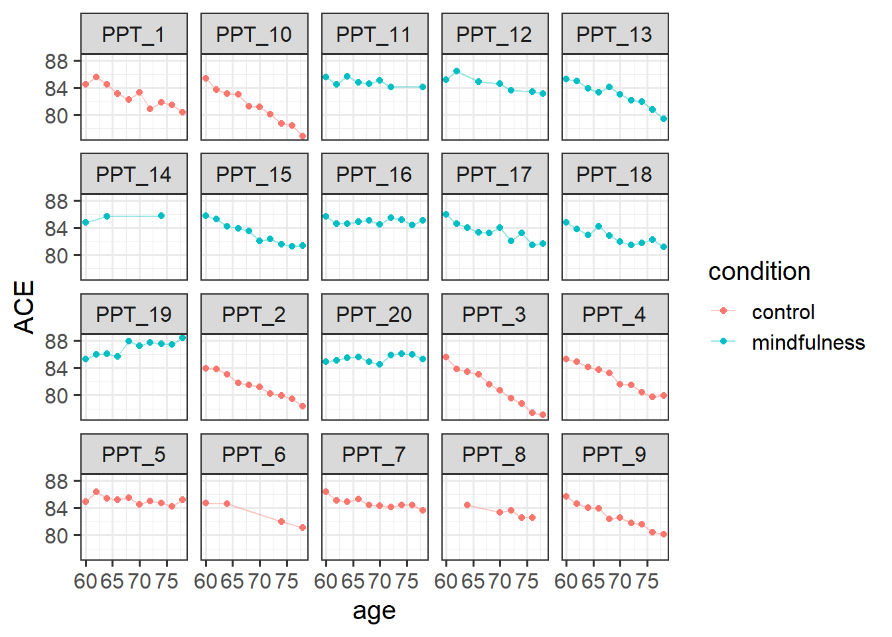
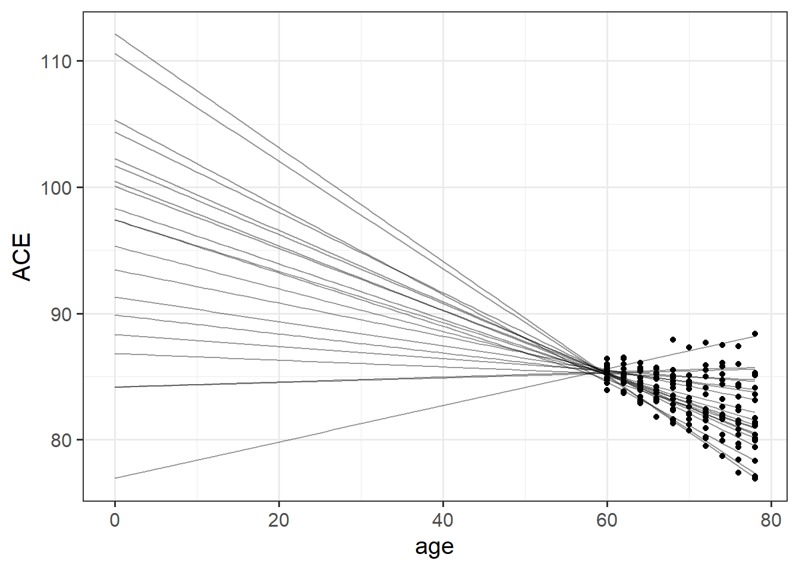
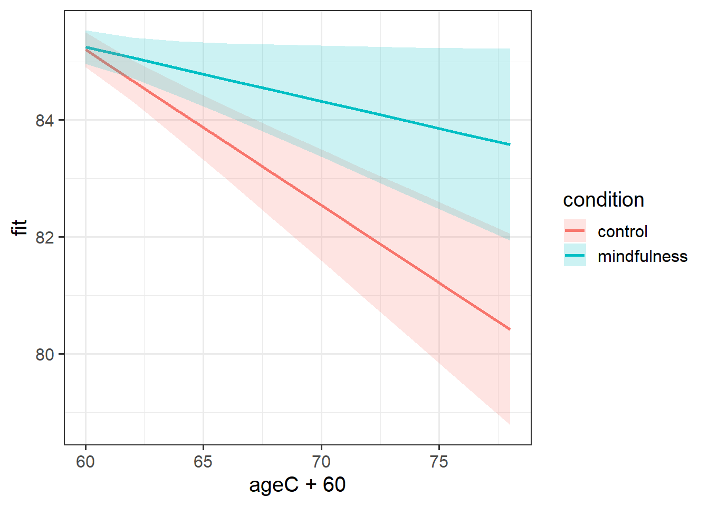
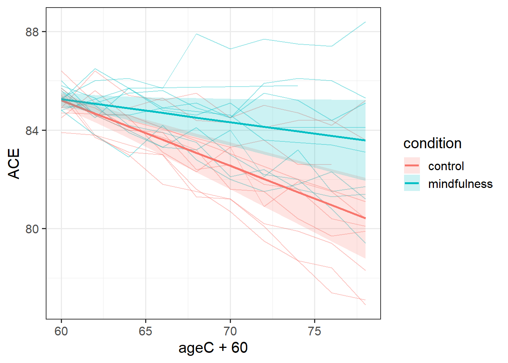
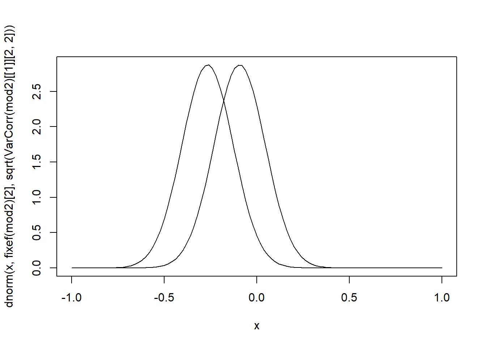

y time person ... ...
1 ? 1 1 ... ...
2 ? 2 1 ... ...
3 ... ... ... ... ...
4 ... ... ... ... ...
5 ? 1 2 ... ...
6 ? 2 2 ... ...
7 ... ... ... ... ...Longitudinal MLMs
Multilevel models are perfectly geared towards dealing with longitudinal data, which can be framed as having essentially the same hierarchical structure as “children in schools”, or “observations within participant”.
The only difference is that in longitudinal data, the repeated measurements within a participant are ordered according to time. For instance, this could apply to anything from studying people over decades as they age to studying eye movements across the 1 second presentation of a spoken word.
As with all applications of multilevel models, we will want our data in long format, so it is usually going to look something like this:
We are treating time as continuous here, which has some great benefits - we don’t need to have seen everyone at every timepoint, nor do we even need to have everyone with regularly spaced intervals (although knowing the chronology is important for decisions about the shape of trajectory we might want to fit (more on that next week!)).
Given the variables above, you might be able to guess the basic form that our models are going to take in order to assess “change over time”.
Regressing the outcome variable on to our time variable gives us an estimate of the trajectory - i.e. how much the outcome changes with every 1 additional unit of time. Furthermore, we can fit random slopes of time in order to model how people1 can vary in the trajectory.
lmer(y ~ 1 + time + (1 + time | person), ...)And we can fit interactions between predictors and time (y ~ time * x) to ask questions such as whether different groups have different trajectories of y, or whether the association between x and y changes over time (x can also be something that changes over time!). For instance, we can use multilevel models to address question such as does the development of reading ability differ between monolingual and bilingual children? Does the association between physical activity and positive mood change as we age? Do people look at the more unusual of two objects following a speech disfluency?
Example
Data: mindfuldecline.csv
A study is interested in examining whether engaging in mindfulness can prevent cognitive decline in older adults. They recruit a sample of 20 participants at age 60, and administer the Addenbrooke’s Cognitive Examination (ACE) every 2 years (until participants were aged 78). Half of the participants complete weekly mindfulness sessions, while the remaining participants did not.
The data are available at: https://uoepsy.github.io/data/msmr_mindfuldecline.csv.
| variable | description |
|---|---|
| ppt | Participant Identifier |
| condition | Whether the participant engages in mindfulness or not (control/mindfulness) |
| study_visit | Study Visit Number (1 - 10) |
| age | Age (in years) at study visit |
| ACE | Addenbrooke's Cognitive Examination Score. Scores can range from 0 to 100 |
| imp | Clinical diagnosis of cognitive impairment ('imp' = impaired, 'unimp' = unimpaired) |
exploring the data
library(tidyverse)
library(lme4)
# mmd <- read_csv("https://uoepsy.github.io/data/msmr_mindfuldecline.csv")
head(mmd)# A tibble: 6 × 6
ppt condition study_visit age ACE imp
<chr> <chr> <dbl> <dbl> <dbl> <chr>
1 PPT_1 control 1 60 84.5 unimp
2 PPT_1 control 2 62 85.6 imp
3 PPT_1 control 3 64 84.5 imp
4 PPT_1 control 4 66 83.1 imp
5 PPT_1 control 5 68 82.3 imp
6 PPT_1 control 6 70 83.3 imp How many participants in each condition? We know from the description there should be 10 in each, but lets check!
mmd |>
group_by(condition) |>
summarise(
n_ppt = n_distinct(ppt)
)# A tibble: 2 × 2
condition n_ppt
<chr> <int>
1 control 10
2 mindfulness 10How many observations does each participant have? With only 20 participants, we could go straight to plotting as a way of getting lots of information all at once. From the plot below, we can see that on the whole participants’ cognitive scores tend to decrease. Most participants have data at every time point, but 4 or 5 people are missing a few. The control participants look (to me) like they have a slightly steeper decline than the mindfulness group:
ggplot(mmd, aes(x = age, y = ACE, col = condition)) +
geom_point() +
geom_line(aes(group=ppt), alpha=.4)+
facet_wrap(~ppt)
modelling change over time
Initially, we’ll just model how cognition changes over time across our entire sample (i.e. ignoring the condition the participants are in). Note that both the variables study_visit and age represent exactly the same information (time), so we have a choice of which one to use.
Why the age variable (currently) causes problems
As it is, the age variable we have starts at 60 and goes up to 78 or so.
If we try and use this in a model, we get an error!
mod1 <- lmer(ACE ~ 1 + age +
(1 + age | ppt),
data = mmd)Model failed to converge with max|grad| = 0.366837 (tol = 0.002, component 1)
This is because of the fact that intercepts and slopes are inherently dependent upon one another. Remember that the intercept is “when all predictors are zero”. So in this case it is the estimate cognition of new-born babies. But all our data comes from people who are 65+ years old!
This means that trying to fit (1 + age | ppt) will try to estimate the variability in people’s change in cognition over time, and the variability in cognition at age zero. As we can see in Figure 1, because the intercept is so far away from the data, the angle of each persons’ slope has a huge influence over where their intercept is. The more upwards a persons’ slope is, the lower down their intercept is.

This results in issues for estimating our model, because the intercepts and slopes are perfectly correlated! The estimation process has hit a boundary (a perfect correlation):
VarCorr(mod1) Groups Name Std.Dev. Corr
ppt (Intercept) 7.51567
age 0.12696 -0.999
Residual 0.51536 So what we can do is either center age on 60 (so that the random intercept is the estimated variability in cognition at aged 60, i.e. the start of the study), or use the study_visit variable.
Either will do, we just need to remember the units they are measured in!
Let’s center age on 60:
mmd$ageC <- mmd$age-60And fit our model:
mod1 <- lmer(ACE ~ 1 + ageC +
(1 + ageC | ppt),
data = mmd)From our fixed effects, we can see that scores on the ACE tend to decrease by about 0.18 for every 1 year older people get (as a very rough rule of thumb, \(t\) statistics that are \(>|2\text{-ish}|\) are probably going to be significant when assessed properly).
summary(mod1)...
Fixed effects:
Estimate Std. Error t value
(Intercept) 85.22558 0.10198 835.735
ageC -0.17938 0.03666 -4.893We’re now ready to add in group differences in their trajectories of cognition:
mod2 <- lmer(ACE ~ 1 + ageC * condition +
(1 + ageC | ppt),
data = mmd)From this model, we can see that for the control group the estimated score on the ACE at age 60 is 85 (that’s the (Intercept)). For these participants, scores are estimated to decrease by -0.27 points every year (that’s the slope of ageC). For the participants in the mindfulness condition, they do not score significantly differently from the control group at age 60 (the condition [mindfulness] coefficient). For the mindfulness group, there is a reduction in the decline of cognition compared to the control group, such that this group decline 0.17 less than the control group every year.
(note, there are always lots of ways to frame interactions. A “reduction in decline” feels most appropriate to me here)
Given that we have a fairly small number of clusters here (20 participants), Kenward Rogers is a good method of inference as it allows us to use REML (meaning unbiased estimates of the random effect variances) and it includes a small sample adjustment to our standard errors.
library(parameters)
model_parameters(mod2, ci_method="kr")# Fixed Effects
Parameter | Coefficient | SE | 95% CI | t | df | p
----------------------------------------------------------------------------------------------
(Intercept) | 85.20 | 0.15 | [84.89, 85.52] | 568.00 | 17.75 | < .001
ageC | -0.27 | 0.04 | [-0.36, -0.17] | -5.93 | 17.95 | < .001
condition [mindfulness] | 0.05 | 0.21 | [-0.39, 0.49] | 0.23 | 17.49 | 0.821
ageC × condition [mindfulness] | 0.17 | 0.06 | [ 0.04, 0.31] | 2.73 | 17.99 | 0.014
# Random Effects
Parameter | Coefficient | SE | 95% CI
--------------------------------------------------------------
SD (Intercept: ppt) | 0.35 | 0.11 | [ 0.19, 0.63]
SD (ageC: ppt) | 0.14 | 0.02 | [ 0.10, 0.20]
Cor (Intercept~ageC: ppt) | 0.26 | 0.33 | [-0.40, 0.74]
SD (Residual) | 0.49 | 0.03 | [ 0.44, 0.56]From those parameters and our interpretation above, we are able to start putting a picture together - two groups that start at the same point, one goes less steeply down over time than the other.
And that’s exactly what we see when we visualise those fixed effects:
library(effects)
effect(term="ageC*condition", mod=mod2, xlevels=10) |>
as.data.frame() |>
ggplot(aes(x=ageC+60,y=fit,
ymin=lower,ymax=upper,
col=condition, fill = condition))+
geom_line(lwd=1)+
geom_ribbon(alpha=.2, col=NA)
Sometimes it is more helpful for a reader if we add in the actual observed trajectories to these plots. To do so, we need to combine two data sources - the fixed effects estimation from effect(), and the data itself:
ploteff <- effect(term="ageC*condition", mod=mod2, xlevels=10) |>
as.data.frame()
mmd |>
ggplot(aes(x=ageC+60,col=condition,fill=condition))+
geom_line(aes(y=ACE,group=ppt), alpha=.4) +
geom_line(data = ploteff, aes(y=fit), lwd=1)+
geom_ribbon(data = ploteff, aes(y=fit,ymin=lower,ymax=upper),
alpha=.2, col=NA)
This plot gives us more a lot more context. To a lay reader, our initial plot potentially could be interpreted as if we would expect every person’s cognitive trajectories to fall in the blue and red bands. But those bands are representing the uncertainty in the fixed effects - i.e. the uncertainty in the average persons’ trajectory. When we add in the observed trajectories, we see the variability in people’s trajectories (one person even goes up over time!).
Our model represents this variability in the random effects part. While the estimated average slope is -0.3 for the control group (and -0.3+0.2=-0.09 for the mindfulness group), people are estimated to vary in their slopes with a standard deviation of 0.14. If you think about what this means - it means that some participants we would expect to actually increase in their slopes.
VarCorr(mod2) Groups Name Std.Dev. Corr
ppt (Intercept) 0.34615
ageC 0.13866 0.260
Residual 0.49450 curve(dnorm(x,fixef(mod2)[2],sqrt(VarCorr(mod2)[[1]][2,2])),-1,1)
curve(dnorm(x,sum(fixef(mod2)[c(2,4)]),sqrt(VarCorr(mod2)[[1]][2,2])),-1,1, add=T)
Footnotes
assuming that it is people we are studying!↩︎